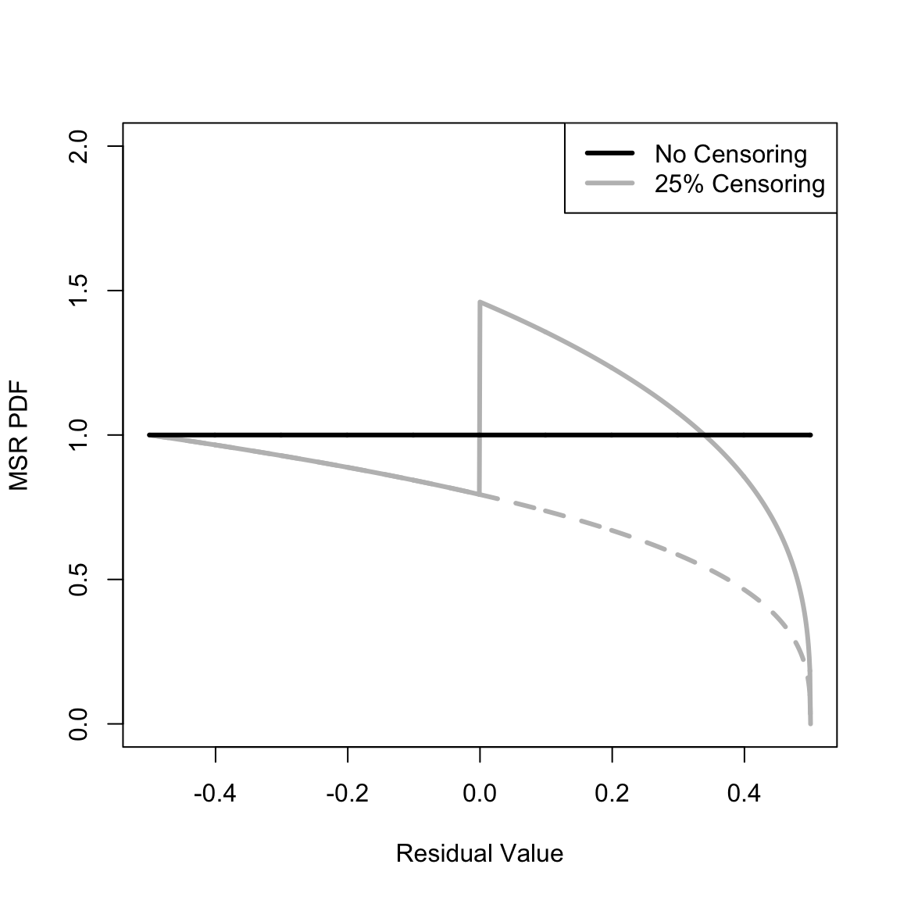
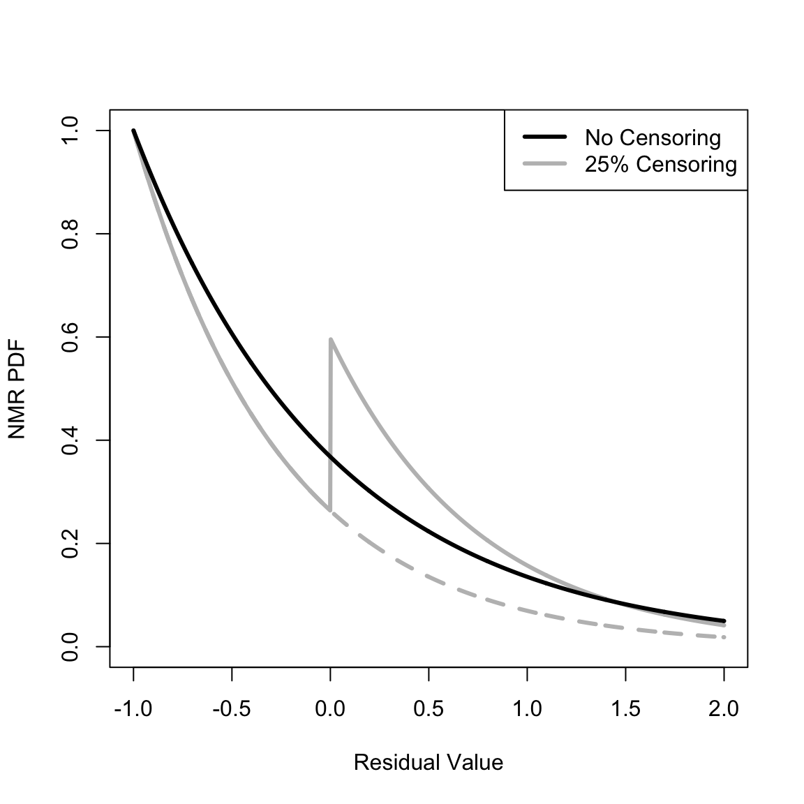
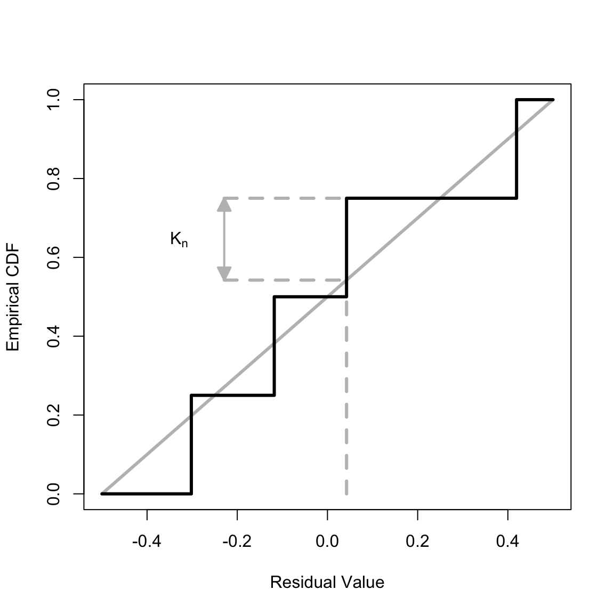
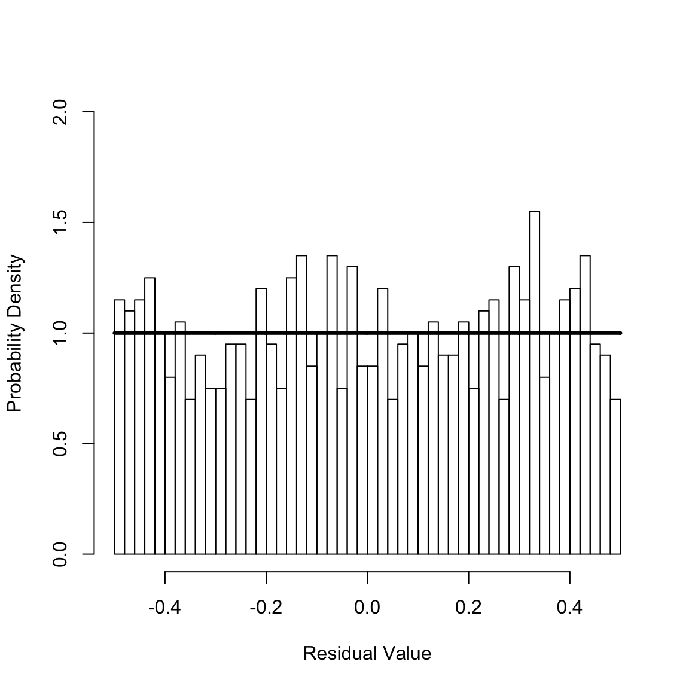
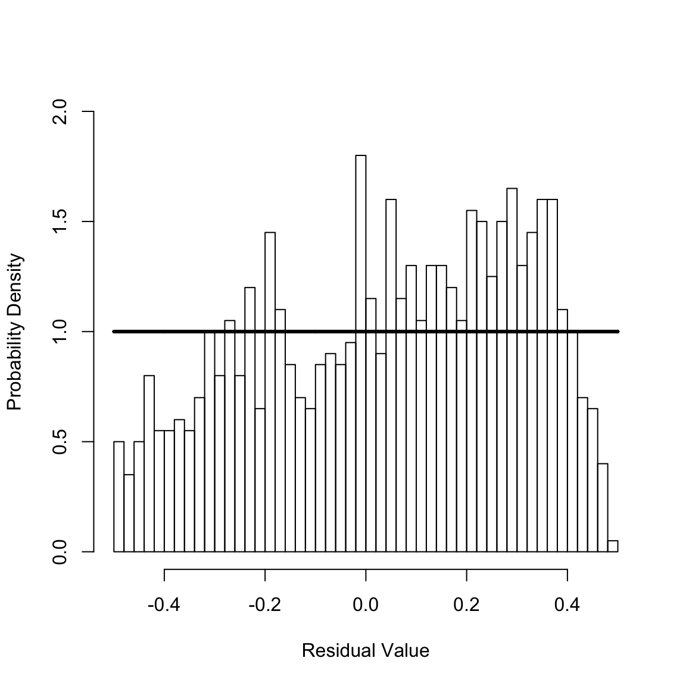
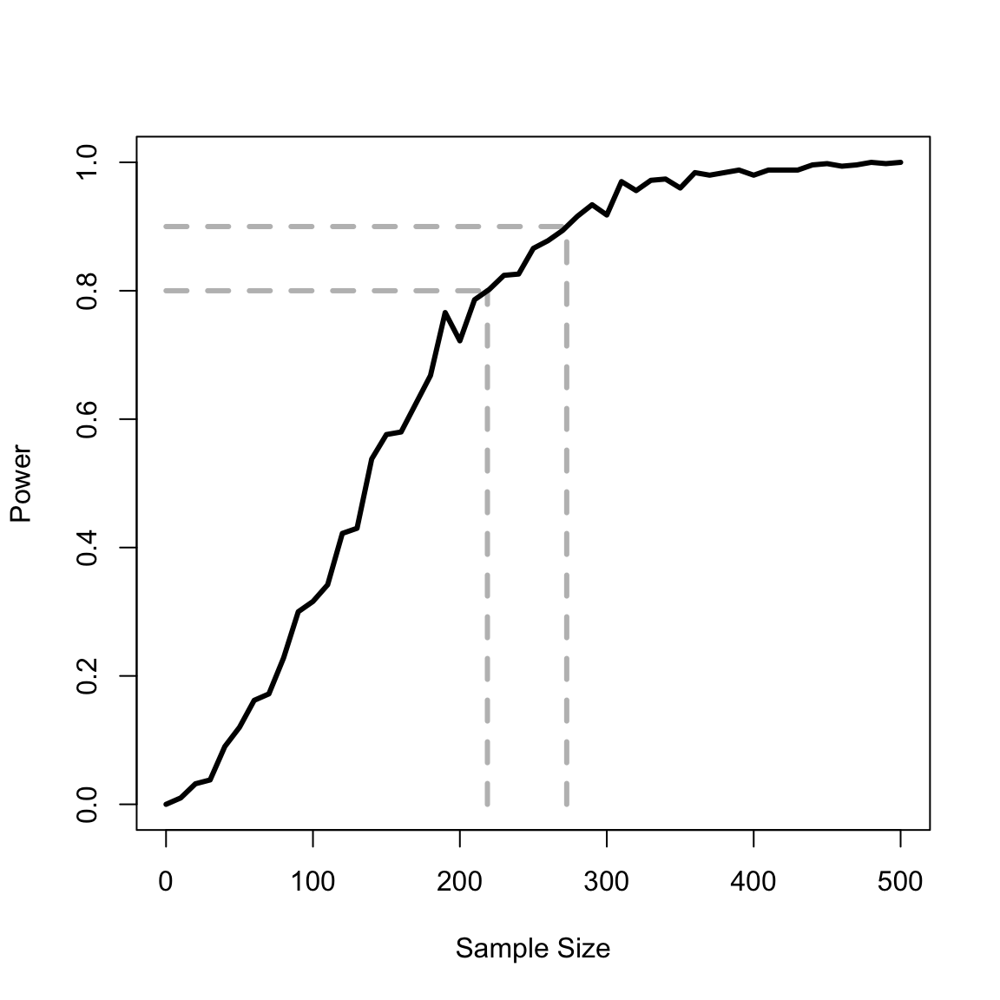
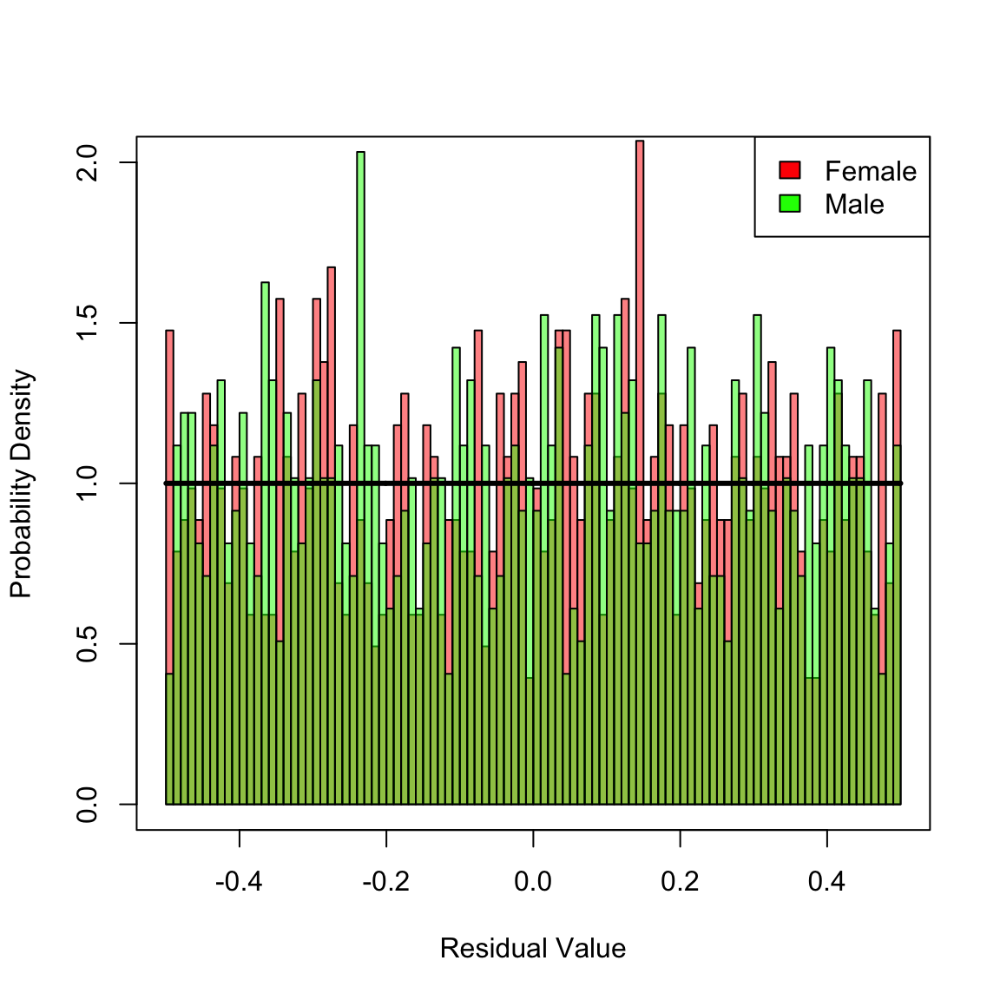
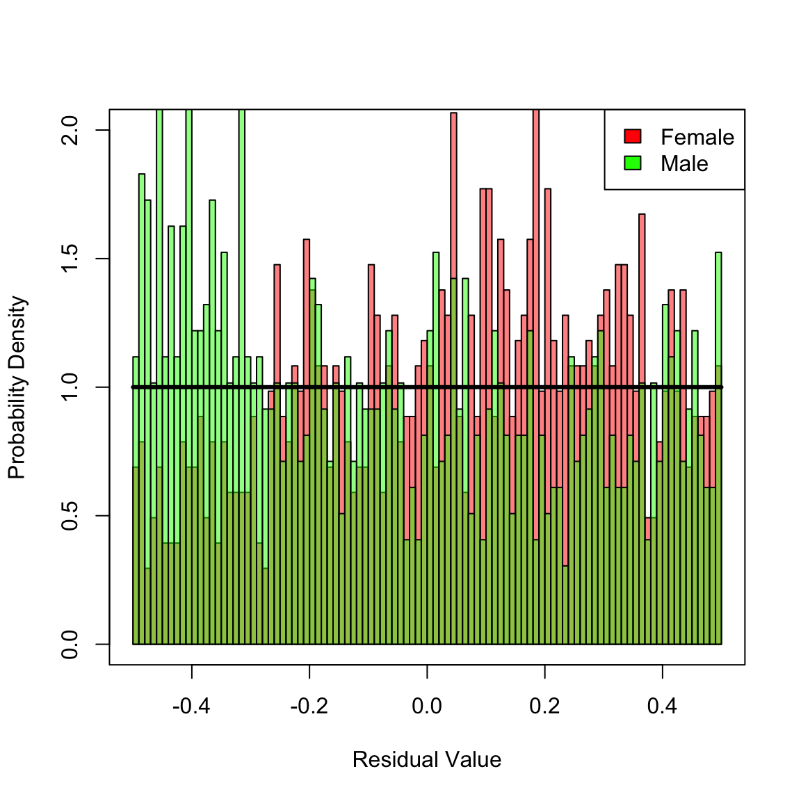
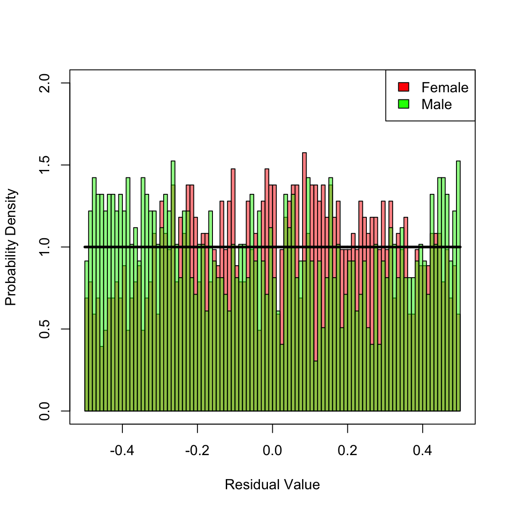

survGoF.RmdThis vignette generates the figures for the article ``A general goodness-of-fit test for survival analysis’’ by Michael Holton Price and James Holland Jones. Although the article is currently in review, a preliminary version is available on biorxiv at https://www.biorxiv.org/content/early/2017/01/31/104406. This vignette will be updated with a link to the final article when it is in press. The vignette relies on open source code in the R package yada, https://github.com/eehh-stanford/yada, which can be installed using devtools.
Section 2 defines the Martingale Survival Residual (MSR) and Negative Martingale Residual (NMR) and Appendix A derives their probability density functions (PDFs) assuming constant event occurrence and censoring (Equations 43 and 44). These can be caculated with the yada functions calcMSRDensityConstHaz and calcNMRDensityConstHaz. The overall PDF can be calculated, as can the components due to event occurrence and censoring. Plot the MSR PDF for censoring ratios of 0% and 25%,
library(yada)
Dplot_MSR <- seq(-0.5, 0.5, len = 1001) # The locations at which to plot the PDFs
plot(Dplot_MSR, calcMSRDensityConstHaz(Dplot_MSR, .25, component = "event"), type = "l", xlim = c(-0.5, 0.5), ylim = c(0, 2), xlab = "Residual Value", ylab = "MSR PDF", lwd = 3, col = "gray", lty = 2)
lines(Dplot_MSR, calcMSRDensityConstHaz(Dplot_MSR, .25), lwd = 3, col = "gray")
lines(Dplot_MSR, calcMSRDensityConstHaz(Dplot_MSR, 0), lwd = 3, col = "black")
legend("topright", c("No Censoring", "25% Censoring"), lwd = 3, col = c("black", "gray"))
Make a similar plot for the NMR PDF (not on the same interval as the preceding plot since the NMR ranges from -1 to Infinity),
Dplot_NMR <- seq(-1, 2, len = 1001) # The locations at which to plot the PDFs
plot(Dplot_NMR, calcNMRDensityConstHaz(Dplot_NMR, .25, component = "event"), type = "l", xlim = c(-1, 2), ylim = c(0, 1), xlab = "Residual Value", ylab = "NMR PDF", lwd = 3, col = "gray", lty = 2)
lines(Dplot_NMR, calcNMRDensityConstHaz(Dplot_NMR, .25), lwd = 3, col = "gray")
lines(Dplot_NMR, calcNMRDensityConstHaz(Dplot_NMR, 0), lwd = 3, col = "black")
legend("topright", c("No Censoring", "25% Censoring"), lwd = 3, col = c("black", "gray"))
Our goodness-of-fit test for survival models relies on the Kolmogorov-Smirnov statistic, which in turn relies on the maximum distance between the empirical cumulative density function (empirical CDF or ECDF) and the CDF of the reference distribution. We illustrate this graphically. First, create some simulated data (with only four data points to aid visualization). The yada function simLinHaz creates simulated data with a linear event hazard and constant censoring hazard. To make this precise – and using the notation in the article linked to above – the event and censoring hazards are, respectively,
\[\lambda(t) = b_1 + a_1 \, t\]
and
\[\lambda^C(t) = b_2 \mbox{,}\]
where \(t\) is time and \(a_1\), \(b_1\), and \(b_2\) are variables that parameterize the hazards. simLinHaz creates simulated data per these hazards, returning a data frame with two columns, time and status, where time is the event (or censoring) time and status is 1 for event occurrence and 0 for censoring:
# Set the random number seed
set.seed(60498) # Chosen to effectively illustrate the Kolmogorov-Smirnov statistic
n <- 4
rho <- .2
b1 <- 1 / 20
b2 <- b1 * rho / (1 - rho) # Censoring rate [rho is only apporoximately the censoring ratio given a linear event hazard]
a1 <- b1 / 10
survObjLin <- simLinHaz(n, b1, a1, b2)
print(survObjLin)
#> [1] 2.816630 1.292374 14.725659 4.573699Given the chosen seed, there are no censored events. We now fit the simulated data with an incorrect model by calling the yada function fitConstHaz, which does a maximum likelihood fit assuming a constant event and censoring hazard. From this fit, calculate the predicted cumulative hazard at the occurrence time accounting for both events and censoring:
fitConst <- fitConstHaz(survObjLin) # The wrong model
cumHazEvent <- fitConst$b1 * survObjLin[, "time"]
cumHazCens <- fitConst$b2 * survObjLin[, "time"]
cumHazTot <- cumHazEvent + cumHazCens
print(cumHazTot)
#> [1] 0.4813031 0.2208398 2.5163075 0.7815496By modeling both event and censoring hazards, the censoring status is immaterial for the calculation of the data residuals. The data is fit with an incorrect model to provide a large difference between the ECDF and reference curve (see below). Call the yada function calcMSR to calculate the MSRs and run a Kolomgorov-Smirnov test on the residuals assuming a uniform reference PDF on the interval -.5 to .5 (linear CDF).
# Martingale Survival Residual treating censoring as a competing risk
msrTot <- calcMSR(cumHazTot)
ksLin <- ks.test(msrTot, punif, -.5, .5) # The Kolmogorov-Smirnov testCalculate the empirical CDF by calling the yada function caclStoppingCDF, which can be considered a generalization of the base R function ecdf (for details, see the documentation for calcStoppingCDF). Also determine the index where the difference between the empirical CDF and reference distribution is maximum.
cdf <- calcStoppingCDF(msrTot, rep(F, length(msrTot)), where = "both")
indMax <- which.max(c(abs(cdf$y + .5 - cdf$before), abs(cdf$y + .5 - cdf$after)))
isBefore <- indMax <= length(cdf$y)
ind0 <- isBefore * (indMax) + (1 - isBefore) * (indMax - 4)Plot the emirical CDF and show the maximum distance between the empirical CDF and reference distribution.
library(shape)
plot(x = NULL, y = NULL, frame = T, xlim = c(-.5, .5), ylim = c(0, 1), lwd = 3, xlab = "Residual Value", ylab = "Empirical CDF")
lines(c(-.5, .5), c(0, 1), col = "gray", lwd = 3)
lines(c(1, 1) * cdf$y[ind0], c(0, cdf$before[ind0]), col = "gray", lwd = 3, lty = "dashed")
if (isBefore) {
stop("This should not happen for the seed used")
} else {
lines(c((cdf$y[ind0] - .5) / 2, cdf$y[ind0]), c(1, 1) * cdf$y[ind0] + .5, col = "gray", lwd = 3, lty = "dashed")
lines(c((cdf$y[ind0] - .5) / 2, cdf$y[ind0]), c(1, 1) * cdf$after[ind0], col = "gray", lwd = 3, lty = "dashed")
Arrows((cdf$y[ind0] - .5) / 2, cdf$y[ind0] + .5, (cdf$y[ind0] - .5) / 2, cdf$after[ind0], code = 3, col = "gray", arr.type = "triangle", arr.adj = -.5, arr.length = .25, arr.width = .25, lwd = 2)
text(x = (cdf$y[ind0] - .5) / 2 - .1, y = (cdf$y[ind0] + .5 + cdf$after[ind0]) / 2, labels = expression(K[n]))
}
lines(c(-.5, cdf$y, .5), c(0, cdf$before, 1), type = "S", lwd = 3)
The maximum value occurs at the third ``step’’, for which the Residual Value (x-axis) is
The CDF of the reference uniform distribution is linear on the interval \(-.5\) to \(.5\) (grey line). The maximum distance between the empirical CDF and reference distribution is
Check this value by calling the core R function ks.test directly,
The p-value for this test depends on the value of the statistic and the number of samples in empirical CDF (4). The p-value is \(0.982\),
print(ksTest)
#>
#> One-sample Kolmogorov-Smirnov test
#>
#> data: cdf$y
#> D = 0.2077, p-value = 0.982
#> alternative hypothesis: two-sidedSince the p-value is greater than \(0.05\), one cannot reject the possibility that this sample was drawn from the reference distribution (though in fact it was not). This is expected due to the small number of samples, \(4\).
In this example, we create simulated data for which both the event and censoring hazards are constant, then fit the simulated date assuming the correct model – that is, do a maximum likelhood fit assuming constant event and censoring hazards. First, create \(1000\) simulated observations with an event hazard of \(1/20\) and a censoring ratio of \(0.2\):
# Constant transition intensities for event and censoring, with a correct
# candidate model that also has constant transition intensities.
set.seed(387341) # From random.org between 1 and 1,000,000
n <- 1000
rho <- .2
b1 <- 1 / 20 # Event rate
b2 <- b1 * rho / (1 - rho) # Censoring rate
# Create the simulated data
survObjConst <- simConstHaz(n, b1, b2)Next, do a maximum likelihood hood fit on the simulated data by calling the yada function fitconstHaz and calculate the event the cumulative hazards for events, censoring, and both events and censoring:
fitConst <- fitConstHaz(survObjConst)
cumHazEvent <- fitConst$b1 * survObjConst[, "time"]
cumHazCens <- fitConst$b2 * survObjConst[, "time"]
cumHazTot <- cumHazEvent + cumHazCensCalculate the Martingale Survival Residual for the total hazard (i.e., accounting also for censoring) and create a histogram of the residuals:
msrCr <- calcMSR(cumHazTot)
hist(msrCr, 40, xlim = c(-1 / 2, 1 / 2), ylim = c(0, 2), freq = FALSE, xlab = "Residual Value", ylab = "Probability Density", main = NULL)
y <- seq(-1 / 2, 1 / 2, len = 1001)
lines(y, calcMSRDensityConstHaz(y, 0), lwd = 3)
For a well-specified model, the Martingale Survival Residuals are uniformly distributed on the interval \(-0.5\) to \(0.5\). This seems plausible given the preceding figure, which shows the histogram of the residuals and reference uniform distribution (solid horizontal line). The Kolmogrov-Smirnov test can be used to statically test this,
ksConst <- ks.test(msrCr, punif, -.5, .5) # The Kolmogorov-Smirnov test
print(ksConst$statistic)
#> D
#> 0.02302752
print(ksConst$p.value)
#> [1] 0.6639313Since the p-value for the test is greater than \(0.05\), one cannot reject that the calculated residuals are drawn from the uniform distribution. Hence, the fit passes the goodness-of-fit test. In the next seection, we describe a fit that fails this goodness-of-fit of test.
In this example, we create simulated data for which the event hazard is linear and the censoring hazard is constant, then fit the simulated date assuming in incorrect model in which both hazards are assumed to be constant. First, create \(1000\) simulated observations with an event hazard of \(1/20\) and a censoring ratio of \(0.2\):
# Time dependent (linear) event intensity and constant censoring, with an incorrect
# candidate model that has constant transition intensities.
set.seed(51600) # From random.org between 1 and 1,000,000
n <- 1000
rho <- .2
b1 <- 1 / 20 # Event rate
b2 <- b1 * rho / (1 - rho) # Censoring rate [rho is only apporoximately the censoring ratio given a linear event hazard]
a1 <- b1 / 10
survObjLin <- simLinHaz(n, b1, a1, b2)Next, do a maximum likelihood hood fit on the simualted data by calling the yada function fitconstHaz and calculate the event the cumulative hazards for events, censoring, and both events and censoring:
fitConst <- fitConstHaz(survObjLin) # The wrong model
cumHazEvent <- fitConst$b1 * survObjLin[, "time"]
cumHazCens <- fitConst$b2 * survObjLin[, "time"]
cumHazTot <- cumHazEvent + cumHazCensCalculate the Martingale Survival Residual for the total hazard (i.e., accounting also for censoring) and create a histogram of the residuals:
msrCr <- calcMSR(cumHazTot)
hist(msrCr, 40, xlim = c(-1 / 2, 1 / 2), ylim = c(0, 2), freq = FALSE, xlab = "Residual Value", ylab = "Probability Density", main = NULL)
y <- seq(-1 / 2, 1 / 2, len = 1001)
lines(y, calcMSRDensityConstHaz(y, 0), lwd = 3)
For a well-specified model, the Martingale Survival Residuals are uniformly distributed on the interval \(-0.5\) to \(0.5\). This does not seem plausible given the preceding figure, which shows the histogram of the residuals and reference uniform distribution (solid horizontal line). The Kolmogrov-Smirnov test can be used to statically test this,
ksLin <- ks.test(msrCr, punif, -.5, .5) # The Kolmogorov-Smirnov test
print(ksLin$statistic)
#> D
#> 0.1039834
print(ksLin$p.value)
#> [1] 8.116515e-10Since the p-value for the test is less than \(0.05\), one rejects that the calculated residuals are drawn from the uniform distribution. Hence, the fit fails the goodness-of-fit test.
In this example, we extend the preceding example that assesses an incorrect model to determine the number of samples needed to reject an incorrect model. That is, how many observations are needed to determine that the (incorrect) constant intensity model is wrong? The effect size is \(a_1\), which differs from zero (the null). The significance criterion is \(\alpha=.05\) (Type 1 errors, mistakenly rejecting the null when it is true). The power is \(1 - \beta(n)\), where \(\beta\) is the rate of Type 2 errors (mistakenly accepting the null when it is false). \(\beta\) is calculated repeatedly via simulation as a function of the number of observations, \(n\). Often, n is chosen to achieve a power of \(.8\) (\(\beta=.2\)).
alpha <- .05
nVect <- seq(10, 500, by = 10) # The vector of number of observations
powerVect <- rep(NA, length(nVect)) # The vector in which to store the power (1-beta)
# Nmc <- 50000
Nmc <- 500
options(warn = -1) # The numerical simulation yields very occasional ties. Suppress warnings this creates in ks.test
for (ii in 1:length(nVect)) {
numSig <- 0
n <- nVect[ii]
for (m in 1:Nmc) {
survObjLin <- simLinHaz(n, b1, a1, b2)
fitConst <- fitConstHaz(survObjLin) # The wrong model
cumHazEvent <- fitConst$b1 * survObjLin[, "time"]
cumHazCens <- fitConst$b2 * survObjLin[, "time"]
cumHazTot <- cumHazEvent + cumHazCens
# Martingale Survival Residual treating censoring as a competing risk
msrCr <- calcMSR(cumHazTot)
ks2Pc <- ks.test(msrCr, punif, -.5, .5) # The Kolmogorov-Smirnov test
if (ks2Pc$p.value <= alpha) {
numSig <- numSig + 1
}
powerVect[ii] <- numSig / Nmc
}
}
options(warn = 0) # Turn warnings back on
# Make the power zero at the origin for plotting
nVect <- c(0, nVect)
powerVect <- c(0, powerVect)
# Interpolate the curve's value for beta=.2 and beta = .1
y1 <- .8
y2 <- .9
x1 <- approx(powerVect, nVect, y1)$y
x2 <- approx(powerVect, nVect, y2)$yPlot the results of the power calculation:
plot(c(0, x1), c(y1, y1), xlab = "Sample Size", ylab = "Power", xlim = c(0, 500), ylim = c(0, 1), type = "l", col = "gray", lwd = 3, lty = "dashed")
lines(c(x1, x1), c(0, y1), col = "gray", lwd = 3, lty = "dashed")
lines(c(0, x2), c(y2, y2), col = "gray", lwd = 3, lty = "dashed")
lines(c(x2, x2), c(0, y2), col = "gray", lwd = 3, lty = "dashed")
lines(nVect, powerVect, lwd = 3)
A very common assumption in survival analysis is the proportional hazards assumption: the effect of some covariate on the baseline or reference hazard is multiplicative. MSRs can be used to assess this assumption, as we demonstrate in this simulation. To begin, load necessary libraries, set the random number seed, then generate simulated data
library(survival)
## Additive covariates incorrectly fit as proportional covariates
set.seed(2105984)
# Define the starting age (15 years)
x0 <- 15
# From Gage and Dyke 1986, Table 2, Level 15
afem <- c(.175, 1.40, .368 * .01, .075 * .001, .917 * .1) # Female parameterization
# Males are assumed to have a higher hazard by an additive (constant) amount
maleBoost <- afem[3] * 2
amal <- afem + c(0, 0, maleBoost, 0, 0)
N <- 2000 # Number of simulated observations
# Sample randomly for male/female
female <- sample(c(TRUE, FALSE), N, replace = T)
# Sample from the relevant Siler hazard
x <- rep(NA, N) # vector of simulated ages
x[ female] <- rsiler(sum(female), afem, x0)
x[!female] <- rsiler(sum(!female), amal, x0)In the preceding block of code, the mortality hazard for females is simulated with a Siler hazard, with the parameters drawn from Table 2 / Level 15 of Gage and Dyke (1986). Males are assumed to have an additive boost in hazard relative to females. In particular, the constant term (third parameter) is simulated as being twice as high for males as for females. We assume contingent survival to \(x_0 = 15\) for the simulation. The probabilities of being female and male are assumed equal, \(0.5\), and simulated ages are sampled using the yada function rsiler.
Next, define objective functions to do a maximum likelihood fit for two models: the correct additive model and an incorrect multiplicative model in which the male hazard is assumed to be equal to the female hazard times a constant.
# Objective function for additive fit
fadd <- function(param, x, female, x0, a0) {
# Calculate the objective function (negative log-likelihood)
# given the input parameters (param), age-at-death vector (x),
# and boolean vector indicating sex (female)
a <- a0 * exp(param)
afem <- a[1:5]
amal <- afem + c(0, 0, a[6], 0, 0)
xFemale <- x[female]
xMale <- x[!female]
nll <- nllsiler(afem, xFemale, x0) + nllsiler(amal, xMale, x0)
return(nll)
}
# Objective function for multiplicative fit
fmult <- function(param, x, female, x0, a0) {
# Calculate the objective function (negative log-likelihood)
# given the input parameters (param), age-at-death vector (x),
# and boolean vector indicating sex (female)
a <- a0 * exp(param)
afem <- a[1:5]
amal <- afem * c(a[6], 1, a[6], 1, a[6])
xFemale <- x[female]
xMale <- x[!female]
nll <- nllsiler(afem, xFemale, x0) + nllsiler(amal, xMale, x0)
return(nll)
}Use these objective functions to fit the additive (correct) and multiplicative (incorrect) models and extract the fit parameters.
# Fit the additive and multiplicative models and extract the fit parameters
a0_add <- c(afem, maleBoost)
paramFitAdd <- optim(rep(0, 6), fadd, x = x, female = female, x0 = x0, a0 = a0_add)
afem_add <- a0_add[1:5] * exp(paramFitAdd$par[1:5])
amal_add <- afem_add + c(0, 0, a0_add[6] * exp(paramFitAdd$par[6]), 0, 0)
a0_mult <- c(afem, 1)
paramFitMult <- optim(rep(0, 6), fmult, x = x, female = female, x0 = x0, a0 = a0_mult)
afem_mult <- a0_mult[1:5] * exp(paramFitMult$par[1:5])
amal_mult <- afem_mult * c(a0_mult[6] * exp(paramFitMult$par[6]), 1, a0_mult[6] * exp(paramFitMult$par[6]), 1, a0_mult[6] * exp(paramFitMult$par[6]))Apply these fits to calculate survivals, MSRs, and do the Kolmogorov-Smirnov test.
# Calculate the survivals, Martingale Survival Residuals (MSRs), and do the Kolmogorov-Smirnov tests
S_add <- rep(NA, N)
S_add[ female] <- ssiler(x[ female], afem_add, x0)
S_add[!female] <- ssiler(x[!female], amal_add, x0)
S_mult <- rep(NA, N)
S_mult[ female] <- ssiler(x[ female], afem_mult, x0)
S_mult[!female] <- ssiler(x[!female], amal_mult, x0)
Dhat_add <- 0.5 * (1 - 2 * S_add)
ks_add <- ks.test(Dhat_add, punif, -.5, .5) # The Kolmogorov-Smirnov test
ks_add_fem <- ks.test(Dhat_add[ female], punif, -.5, .5) # The Kolmogorov-Smirnov test
ks_add_mal <- ks.test(Dhat_add[!female], punif, -.5, .5) # The Kolmogorov-Smirnov test
Dhat_mult <- 0.5 * (1 - 2 * S_mult)
ks_mult <- ks.test(Dhat_mult, punif, -.5, .5) # The Kolmogorov-Smirnov test
ks_mult_fem <- ks.test(Dhat_mult[ female], punif, -.5, .5) # The Kolmogorov-Smirnov test
ks_mult_mal <- ks.test(Dhat_mult[!female], punif, -.5, .5) # The Kolmogorov-Smirnov testThe Cox model also makes a proportional hazards assumption, but it is a semi-parametric model due to its use of a non-parametric baseline hazard. Repeat the preceding steps for a Cox model so that it can be compared against the additive and (parametric) multiplicative models.
# Fit a Cox model, calculate the survivals / MSRs, and to the Kolmogorov-Smirnov tests
sampDf <- data.frame(x = x, female = female)
coxFit <- coxph(Surv(x) ~ female, data = sampDf)
cumHazCox <- as.numeric(predict(coxFit, sampDf, type = "expected"))
survCox <- exp(-cumHazCox)
Dhat_cox <- 0.5 * (1 - 2 * survCox)
ks_cox <- ks.test(Dhat_cox, punif, -.5, .5)
ks_cox_fem <- ks.test(Dhat_cox[ female], punif, -.5, .5) # The Kolmogorov-Smirnov test
ks_cox_mal <- ks.test(Dhat_cox[!female], punif, -.5, .5) # The Kolmogorov-Smirnov testTo aid interpretation, print out the p-values from the KS tests for the additive, multiplicative, and Cox models.
# Create and print out a summary data frame
testName <- c("Add All", "Mlt All", "Cox All", "Add Fem", "Add Mal", "Mlt Fem", "Mlt Mal", "Cox Fem", "Cox Mal")
pvalVect <- c(ks_add$p.value, ks_mult$p.value, ks_cox$p.value, ks_add_fem$p.value, ks_add_mal$p.value, ks_mult_fem$p.value, ks_mult_mal$p.value, ks_cox_fem$p.value, ks_cox_mal$p.value)
ksStatVect <- c(ks_add$statistic, ks_mult$statistic, ks_cox$statistic, ks_add_fem$statistic, ks_add_mal$statistic, ks_mult_fem$statistic, ks_mult_mal$statistic, ks_cox_fem$statistic, ks_cox_mal$statistic)
dfOut <- data.frame(test = testName, statistic = ksStatVect, pval = pvalVect)
print(dfOut)
#> test statistic pval
#> 1 Add All 0.01623086 6.678553e-01
#> 2 Mlt All 0.01775765 5.536954e-01
#> 3 Cox All 0.01575466 7.036147e-01
#> 4 Add Fem 0.02250662 6.821200e-01
#> 5 Add Mal 0.01658092 9.495975e-01
#> 6 Mlt Fem 0.09595782 1.496860e-08
#> 7 Mlt Mal 0.09652651 2.175484e-08
#> 8 Cox Fem 0.06272928 6.737196e-04
#> 9 Cox Mal 0.06105946 1.301728e-03
dfOut <- data.frame(test = testName, pval = pvalVect)
print(dfOut)
#> test pval
#> 1 Add All 6.678553e-01
#> 2 Mlt All 5.536954e-01
#> 3 Cox All 7.036147e-01
#> 4 Add Fem 6.821200e-01
#> 5 Add Mal 9.495975e-01
#> 6 Mlt Fem 1.496860e-08
#> 7 Mlt Mal 2.175484e-08
#> 8 Cox Fem 6.737196e-04
#> 9 Cox Mal 1.301728e-03When the KS-test is applied to the pooled residuals for female and male, none of the models can be rejected since the pertinent p-values are greater than \(0.05\). However, the mis-specified models (multiplicative and Cox) are not good fits, which is apparent when the KS-test is applied separately for females and males. Both models are biased, which is reflected in non-uniformily distributed residuals. In contrast, the correct additive model is not rejected after stratifying by female/male. To gain additional insight, plot the histograms of stratified residuals.
# Plot the MSR histograms stratified by female/male
femCol <- rgb(1, 0, 0, .5)
malCol <- rgb(0, 1, 0, .5)
hist(Dhat_add[ female], 100, xlim = c(-1 / 2, 1 / 2), ylim = c(0, 2), freq = F, xlab = "Residual Value", ylab = "Probability Density", main = NULL, col = femCol)
hist(Dhat_add[!female], 100, add = T, freq = F, col = malCol)
y <- seq(-1 / 2, 1 / 2, len = 1001)
lines(y, calcMSRDensityConstHaz(y, 0), lwd = 3)
legend("topright", c("Female", "Male"), fill = c("red", "green"))
box() In the preceding histogram, residuals for females are plotted in red and those for males in green. Transparency is used to simultaneously visualize both sets of residuals together. For the additive model, there is no clear bias in the two distributions. However, for the multiplicative and Cox models (plotted next) there are clear biases in the residual disrtributions: each mis-specified fit yields an overall distribution of residuals that is close to uniform, but there are definite regions where a bias exists towards males or females in the histograms. Hence, we reject these two mis-specified fits.
hist(Dhat_mult[ female], 100, xlim = c(-1 / 2, 1 / 2), ylim = c(0, 2), freq = F, xlab = "Residual Value", ylab = "Probability Density", main = NULL, col = femCol)
hist(Dhat_mult[!female], 100, add = T, freq = F, col = malCol)
lines(y, calcMSRDensityConstHaz(y, 0), lwd = 3)
legend("topright", c("Female", "Male"), fill = c("red", "green"))
box()
hist(Dhat_cox[ female], 100, xlim = c(-1 / 2, 1 / 2), ylim = c(0, 2), freq = F, xlab = "Residual Value", ylab = "Probability Density", main = NULL, col = femCol)
hist(Dhat_cox[!female], 100, add = T, freq = F, col = malCol)
lines(y, calcMSRDensityConstHaz(y, 0), lwd = 3)
legend("topright", c("Female", "Male"), fill = c("red", "green"))
box()